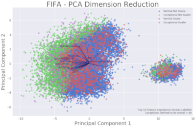
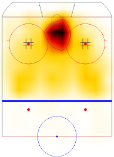
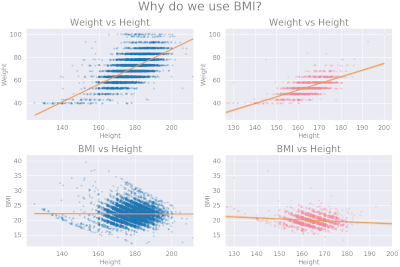

Welcome to Mark Dodd's Data Science Journey
Hi! My name is Mark Dodd and you've found my Data Science portfolio.
Here you will find out a bit more about me and explore a number of my favorite Data Science projects. I love analyzing data; using data to tell interesting informative stories; and using data to make meaningful predictions.
Some of my favorite projects that you will find in my portfolio are:
- Hockey Analytics - Visualizing the Distribution of Hockey Statistics using Heatmaps
- Image Classification - Differentiating Images of Dogs and Cats using a Convolutional Neural Network and Google Cloud's Deep Learning VM Image
- Logistic Regression - Predicting the Outcome of National Hockey League Games
- Data Journalism - Analyzing Rock Climbing Data
Reach out to me on LinkedIn, GitHub or by email. I'd love to hear from you.


